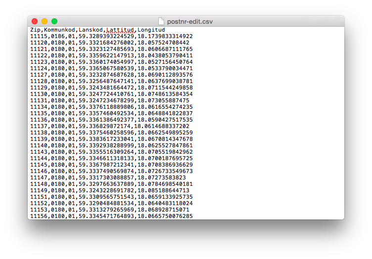
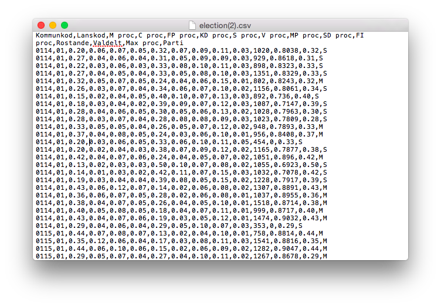
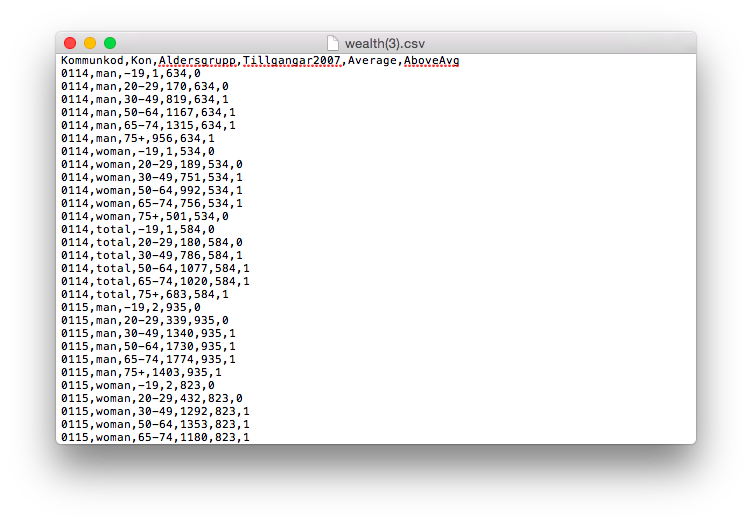
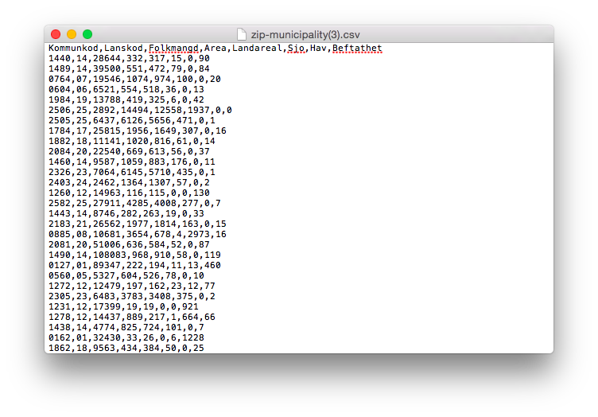
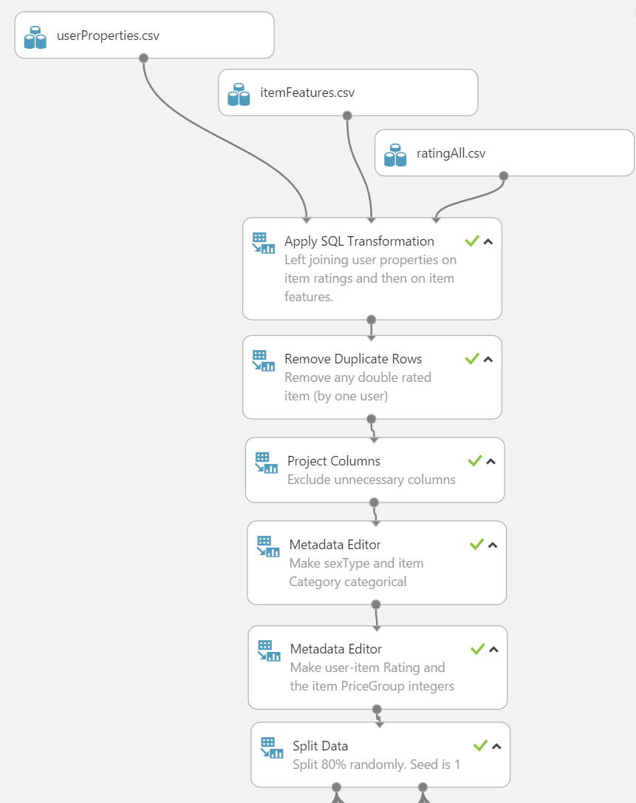
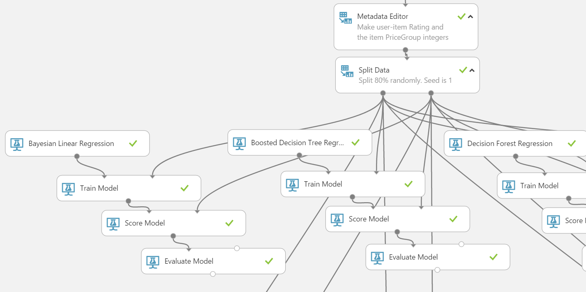
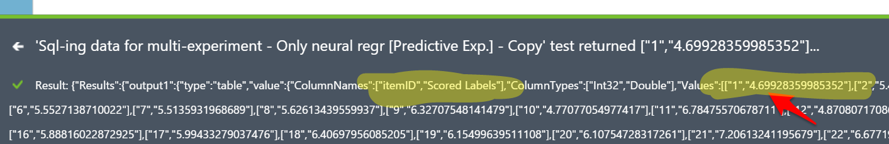

Webpage link :: ffcg-analyticsanta.azurewebsites.net
GitHub repo :: JAkerblom/analytic-santa.git
CSS3 och AngularJSjQuery->Ajax->PHP?? Bättre tips? Osäker på Node.JS och MongoDBjQuery->Ajax->PHP , har jag använt i amd-hemsidan.C# script??Azure->ASP.NET MVC4 kommer kräva upplärning.Kan någon kan förse mig med en kul bild som är forefront:ig och julig?| Moment | Beskrivning | Tidsåtgång |
|---|---|---|
| Data: Klappar | Kartläggning av klappar | 5h |
| Insamling av bilder från klappar (kopplat till nästa och ev. relaterat till scraping) | 2h (3h) | |
| Insamling av beskrivning/titel/pris/grupp (lite datadrivet eftersom det kan ge prediktorer) | 7h | |
| Data: Extern | Ta fram dataset från lämplig datakälla (SCB?) | 1h (+efterforskning) |
| Strukturera dataset och gör om eventuella features till lämplig datatyp. | 4h (+trials and errors) | |
| Deploya dataset som blob storage. | 1h | |
| Data: Intern | Kom på vettiga/roliga frågor (kan behöva några till) | 4h |
| Bestäm frågornas datatyper | 1h | |
| Bestäm formulärelement | 1h | |
| Azure | Bestämma approach | - (1d research) -> Tog 3d med återvändsgränden |
| Bygga testdataset för test av genomförbarhet. Speciellt fokus på svarsvariabeln. | 4h | |
| Bygg modell | 5h (totaltid är dagar) | |
| Bygg struktur för input och koppla i Azure (beror på backend approach). | 3h | |
| Deploy web service och hooka på i hemsidan. | 1h | |
| Feedback loop | Välj approach till feedback loop | - (1d research) |
| Implementera lösning | 2d (förhoppningsvis kortare) | |
| Webb: Front-end | Research kring hur man bygger en hemsida i .NET (krisar det struntar jag i .NET och fulkodar det som hemsidan till arbetsmarknadsdagarna) | 2d (värmt upp med två dagars research) |
| Välj tema | 5h | |
| Bestäm vy-upplägg med syfte på varje vy | 6h | |
| Ta fram koncept på formulärelement | 5h | |
| Ta fram koncept på vyerna | 1d | |
| Implementera reaktiva element (AngularJS / jQuery) | 2d | |
| Implementera HTML/CSS | 3d | |
| Webb: Back-end | Bestäm lagringsmetod för input-data (går mot retraining-biten) | 4h |
| Välj metod (php/Node.js) och implementera script för lagring av input-data. | 1d | |
| Sätt ihop kommunikation mellan vyer. | 1d | |
| Sätt upp kommunikation mot Azure | 4h | |
| Implementera kodlösningen för automatisk programmatisk retraining genom hemsidan. | - | |
| Förutsatt att jag lägger all min tid på det här är tidsåtgången ›››››››››› | Total 11d + 64h ≈ 19d @ ca. 4-6dec |
Man hade exempelvis kunnat gå efter någon stor aktör som Amazon som predikterar bra presenter. Eller så tar man något mer som är mer eller mindre tillgängligt i Sverige och är mer sannolikt en populär klapp pga interna trender. Håller man sig till fem presenter inom varje borde det bli 50 presenter. Dock kanske det blir snedvriden data sen om man tar för många presenter inom en kategori som ändå väldigt få kan tänka sig att välja.
Om man går efter olika segment inom detaljhandeln så kan man kategorisera samtidigt som man får tillgång till andra data. Detta utgörs då av:
På hittajulklappar.nu så har de lite andra kategorier (nedan). Det kan vara värt att försöka gruppera alla julklappar jag tar fram enligt båda dessa kategorisamlingar. Antingen tillsammans eller var för sig. Det kan exempelvis vara svårt att kategorisera 'Donation till gott ändamål'. Eller en elektronisk pryl som quadcopter vilken kan vara både en billig och dyr julklapp.
| Feature | Värden | Beteckning |
|---|---|---|
| Namn | {string}[NOMINAL] |
iName |
| Pris | {number}[REAL] |
iPrice |
| PrisGrupp | {1,2,3,4,5n}[ORDINAL] |
iPriceGroup |
| Category | {stringlist}[NOMINAL] |
iCategory |
| Is Sports? | {0, 1}[BINARY] |
isCatSports |
| Is Electronics? | {0, 1}[BINARY] |
isCatElectronics |
| ... | ||
| Genus influence | {Male, Female, Both}[NOMINAL] |
genusType |
| Is nerdy? | {0, 1}[BINARY] |
isNerdy |
| Is more for adolescents? | {0, 1}[BINARY] |
isChildItem |
Man hade eventuellt också behövt lagra en bild, vilket kan göras i BLOB-formatet. Efterforskning på hur man displayar en sådan bild kan eventuellt behöva göras.
Quadcopters! här.
¡Fråga! Om man vill använda kategorier så kan man antingen göra det till en kolumn med nominella data (en lista med alla valbara kategorier och endast en kan väljas åt gången), eller så gör man lika många kolumner som kategorier och tvingar dessa till att vara binära och hur hur många som helst kan sättas till TRUE för en klapp. Då det är jag som sätter varje datarad tvivlar jag på att jag kommer sätta en TRUE på mer än tre kategorier per klapp. Hursomhelst, med detta kan man tillåta tvetydiga presenter att ha mer än en etikett på sig.
Det här rör demografiska data som kan ge ytterligare förklarande variabler. Exempelvis från postnummer. Kan det ge persona också så är det ju superbra. Vet att hitta.se har en livsstils app där de genom gatan kan få reda på medelinkomst, skuldsättning och vad folk på denna gata gillar i livet (vin, kultur, aktiehandel).
Jag har ännu inte dykt ner i det här, men jag tänker hålla mig till att göra det enkelt. Den informationen jag får ut av SCB ska jag så klart försöka hämta så många potentiella variabler ifrån, men tänker inte lägga för mycket tid på det. Lyckas jag få ut snittinkomst och partitillhörighet så är jag rätt nöjd och hoppas det lyfter resultatet något.
Det jag har fått fram hittills är postnummer kopplat till kommunkod och kommunkod kopplat till diverse data -> Partival, Reala tillgångar, Kommundata. Se följande bilder för upplägg på CSV-filer. Jag kommer lägga till ett set med namnet på kommunerna och länen utifall att man vill använda det istället i modellen. Visserligen kommer jag troligen sätta upp en NN-modell vilket ändå inte kan tolkas, så namn på orter kan vara onödigt.
   
Detta gäller främst insamling från anställda på forefront med målet att få med de grundläggande förklarande variablerna och svarsvariabeln.
| Prediktor | Värden | Beteckning |
|---|---|---|
| Kön | {0, 1}[NOMINAL::BINARY] |
sexType |
| Ålder | {0-100}[DISCRETE] |
age |
{1,2,3,4,5n}[ORDINAL/?/INTERVAL] |
ageGroup |
|
| Relation | {Spouse, Child, Parent, Sibling}[NOMINAL] Kan bli knepig, man skriver ju in data för sig själv. Vi kan väl inte prediktera utifrån en extern relation då. |
relation |
| Postnummer | {?:/xxx xx/}[NOMINAL] |
zipCode |
| Senast reseland | Svårimplementerad. Kika på binära preferenser istället | lastTravelDestination |
| Föredrar sol / vintersemester | {0, 1}[NOMINAL::BINARY] |
prefersSuntrip |
| Föredrar mjuka / hårda klappar | {0, 1}[NOMINAL::BINARY] |
prefersSoftPresents |
| Vilken choklad i Paradisasken | {X, 0, 1, 2, ...}[NOMINAL] |
chocolatePref |
| Alt. Vit/Mörk/Mjölkchocklad? | {Vit, Mörk, Mjölk, Inget}[NOMINAL] |
chocolatePref |
| Tror på tomten | {Y, N, ?}[NOMINAL::BINARY] |
santaBelief |
| Hund eller katt? | {0, 1, ?}[NOMINAL::BINARY] |
prefersDog |
| Intressen | Kan vara svår. Tänk om personen inte tycker om något av det jag föreslår. | interests |
| Brukar ha rim på julklappar? | {}[BINARY] |
`` |
| Paradis eller Aladin? | {}[NOMINAL:BINARY] |
`` |
Köttbullar Prinskorvar Skinka Sill Brysselkål, Röd/Brunkål Lutfisk Ägg Lax Janssons Sylta
Knäck MArsipan Nougat Pepparkaka Lussebulle Ischoklad Polkagris
Jag har precis fått tillgång till lösenord för en av våra azure-servrar (f5bv9w5661). Användarnamn och lösen fås av mig om eller Johnny. Den databas jag använder heter ffcgamd-db (se här). Hittills har jag lagt upp en table för användaruppgifter (userInput). Jag kommer nog fortsätta med tre tabeller, alltså en för dessa användaruppgifter, en för klappinfo och en för användar-klapp-ratings. Eventuellt kommer även en databas finnas för externa data så att man från hemsidan kan hämta vissa externa uppgifter utifrån det användaren matat in (ex. postnummer -> inkomst).
De connection strings som jag kommer använda kommer främst vara ODBC och PHP. ODBC för att hämta data till azuremodellen och PHP för att lagra från hemsidan.
// ODBC
Driver={SQL Server Native Client 10.0};Server=tcp:f5bv9w5661.database.windows.net,1433;Database=ffcgamd-db;Uid=ffcgdb_web@f5bv9w5661;Pwd={your_password_here};Encrypt=yes;Connection Timeout=30;
// PHP
Server: f5bv9w5661.database.windows.net,1433 \r\nSQL Database: ffcgamd-db\r\nUser Name: ffcgdb_web\r\n\r\nPHP Data Objects(PDO) Sample Code:\r\n\r\ntry {\r\n $conn = new PDO ( \"sqlsrv:server = tcp:f5bv9w5661.database.windows.net,1433; Database = ffcgamd-db\", \"ffcgdb_web\", \"{your_password_here}\");\r\n $conn->setAttribute( PDO::ATTR_ERRMODE, PDO::ERRMODE_EXCEPTION );\r\n}\r\ncatch ( PDOException $e ) {\r\n print( \"Error connecting to SQL Server.\" );\r\n die(print_r($e));\r\n}\r\n\rSQL Server Extension Sample Code:\r\n\r\n$connectionInfo = array(\"UID\" => \"ffcgdb_web@f5bv9w5661\", \"pwd\" => \"{your_password_here}\", \"Database\" => \"ffcgamd-db\", \"LoginTimeout\" => 30, \"Encrypt\" => 1);\r\n$serverName = \"tcp:f5bv9w5661.database.windows.net,1433\";\r\n$conn = sqlsrv_connect($serverName, $connectionInfo);Jag har lämnat approachen med att använda mig av ett matchbox recommender system. Se nedan för mer info kring det. Har även lämnat classification-området och använder mig nu av regression models.
Jag är osäker på hur upplägget av kombinationen mellan data från användaren och klapparna ska se ut. Man kan t.ex. välja att rate'a alla klappar från 1-10 eller {0,1} (binärt). Hur ska då en inlärningsmodell ta fram en klapp när alla träningsdata består av en massa rader med användarfeatures från en användare, features från en klapp och den ratingen just den klappen fick? Jag vill ju prediktera något som inte är i datasetet i det fallet.
| User age | User wealth | User hobby | Item price | Item category | User-item-rating |
|---|---|---|---|---|---|
| 20år | 400000kr | Fotboll | 100kr | Elektronik | rating: 6 eller isApproved: TRUE |
| 20år | 400000kr | Fotboll | 200kr | Sport | rating: 4 eller isApproved: FALSE |
Predikterar man rating så är det en regressionsmodell jag är ute efter. Jag byggde ett dataset på sättet ovan där varje användare utgör flera rader om de rateat flera items. Här är då rating det jag vill prediktera och använder både user features och item features på detta sättet. Det är det närmaste en matchbox recommender jag kan komma.
Jag provbyggde en Azure-modell som provar alla stora regressionsmodeller mot varandra. Den här modellen kan jag använda sen när jag ska tweaka mot den riktiga datan så den kommer ligga som den gör tills det är dags.
 Den här visar modellen i sin helhet. Den finns på denna länk.
Den här visar modellen i sin helhet. Den finns på denna länk.
 Den här visar första delen av modellen som joinar test-datan (userfeatures, itemfeatures och user-item-ratings) samt tvättar den.
 Den här visar en del av modellen där själva träningsmodellerna är uppradade. I dagsläget har jag inget bra sätt att koppla ihop deras resultat för att visualisera vilken som presterar bäst. Fungerade bra med classifiers men något annat krävs för regressionsmodeller då de spottar ibland ut olika form på deras data.
Jag deployade training-modellen med endast en neural-net regression model och försökte få den att prediktera alla items för en enda användare. För att göra det så fick jag kringå det vanliga upplägget och försöka force-joina användar-datasetet med item-datasetet. Input-modulen följer endast formatet på det element som den delar input-point med. I det här fallet är det användar-datasetet. Med lite rensning av denna kunde jag se till att den deployade modellen endast kräver användarfeatures som input.
I figuren nedan är en överblick på modellen med beskrivningar. Modellen kan nås genom den här länken.

Formatet på output-datan är med det här upplägget rätt så praktiskt. Man får tillbaka en JSON-sträng där den predikterade ratingen för varje item finns uppradad. Man kan själv sedan sortera det här i en vektor och välja den högsta eller kanske de tre högsta att presentera för användaren.

För att komma åt informationen kopplat till den hittills deployade modellen går man till följande länk.
Inte aktuellt längre.
Inte aktuellt längre.
Inte aktuellt längre
Inte aktuellt längre
Hittills har mestadels av alla google-länkar lett mig till reinforcement learning (RL). Eftersom det känns som ett annat sorts problem (mer robotar och likheter mot reglerteknik), så har jag satt stopp för just den här grenen. Det jag i annat fall är ute efter är en modell som återtränas, t.ex. vissa klockslag under dagen eller efter ett visst antal svarsinlägg, detta relaterar till programmatic retraining av ens modell.
Mitt nästa steg är att få till retraining manuellt genom att man lägger till endpoints till ens modell i ML Studio. Sedan får jag dyka ner i retrainingen igen när jag kommit en bit in i byggandet av hemsidan. Detta då det helst ska ske med ett C#-script och om jag ska lära mig det allteftersom hemsidan byggs så kan jag slänga på den dimensionen sist.
Retraining har Azure ett exempel på hur man kan implementera för att Retrain ML models programatically.
När man publishat sin modell (tränat) så kan man gå tillbaka till Training Experiment och lägga till en output module efter Train Model. Dock verkar det som att Microsofts dokumentation av Azure är för gammal för de har ändrat beteckningar på saker och ting. Kör Retraining web service, det borde ge samma resultat.

Approachen kring retraining har jag satt till följande koncept.

Hittills har jag lagt upp ett testexempel som använder sig av två C# console applications. Förfarandet gick till så här:

 • F5624D • CC231E • 34A65F • 0F8A5F • 235E6F
• F5624D • CC231E • 34A65F • 0F8A5F • 235E6F
Den här vyn baseras dels på att du vet vilket steg du befinner dig i, men även en horisontell accordion. Hade dock kunnat vara kul att göra om det här konceptet till din resultat-vy. Idén går ut på att klapparna gömmer sig bakom varje fält och när man trycker på en så åker fältet fram som accordion och klappen exponeras. Väl där får man rate:a klappen eller vad som nu bestäms.

Användaren kan börja med att mata in det som blir rena demografiska variabler. Nästa steg kan bli mer frågor som är roliga.
Konceptuellt handlar det om att ha någon progress bar och lite fält med användarvänliga formulär-element. I det här fallet är det bara boxar för ja/nej. Lämpligt är att rita upp formulärstrukturen för sig själv.

Den här vyn hänger mycket på hur man vill konstruera svarsvariabeln. Detta då det här steget behöver vara dels genomförbart och kul att göra, samt ge data som faktiskt hjälper en att prediktera presenter.